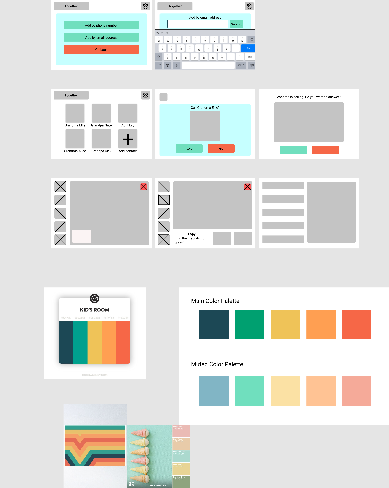

<!doctype html>
<html lang="en">

</html>

<head>
  <!-- Required meta tags -->
  <meta charset="utf-8">
  <meta name="viewport" content="width=device-width, initial-scale=1, shrink-to-fit=no">

  <!-- Bootstrap CSS -->
  <link rel="stylesheet" href="https://stackpath.bootstrapcdn.com/bootstrap/4.5.2/css/bootstrap.min.css"
    integrity="sha384-JcKb8q3iqJ61gNV9KGb8thSsNjpSL0n8PARn9HuZOnIxN0hoP+VmmDGMN5t9UJ0Z" crossorigin="anonymous">

  <title>Interactive Design</title>
  <link rel="stylesheet" href="index.css">
  <!-- TODO: add additional links here! e.g. fonts, icons, more stylesheets, etc. -->
  <link href="https://fonts.googleapis.com/css2?family=Montserrat:wght@300;400&display=swap" rel="stylesheet">
  <meta content="width=device-width, initial-scale=1" name="viewport" />
  <meta charset="utf-8">
</head>

<body>
  <!-- TODO: put your HTML code here! -->
  <div class="heading">
    <h1 style="padding-top: 10px">Interactive Design</h1>
    <h3 style="padding-bottom: 10px"> Together </h3>
  </div>
  <div class="wrapper">
    <div class="tabs">
      <div class="tab">
        <input type="radio" name="css-tabs" id="tab-1" checked class="tab-switch">
        <label for="tab-1" class="tab-label">Introduction</label>
        <div class="tab-content">
          <div class="flex-col">
            <h4>
              Introduction:
            </h4>
            <p>
              In this project, we practiced iterative design by creating a prototype of a tablet app based on the
              concept of Together Video Call. We focused on a
              couple main goals: creating a simple interface that is easy to learn and simple to understand and ensuring
              that users have a safe and enjoyable experience. From our original sketch to our current prototype, we’ve
              received a lot of feedback about user flow, design choices, and making each element clear and purposeful.
              Our figma prototype walks you through the process of making an account, adding a contact, calling a
              grandparent, and interacting with the different activity options available during the video call. For
              accessibility, we have included an interactive settings page in this prototype that is reachable once you
              exit the call. Since our app primarily serves an elderly population in addition to children, we designed
              our interface to be simple to understand and easy to learn. In this mockup, we want to showcase the wide
              array of bonding activities available, as well as the app’s emphasis on usability for its audience.
            </p>
            <h4>
              Together Video App:
            </h4>
            <p>
              For kids who are active and playful, a relatively static interface like Facetime and Zoom might not be the
              most engaging way to communicate. For grandparents who aren’t technologically adept, these interfaces can
              be overwhelming and unclear. Together is a video calling app that connects kids to their grandparents
              and long-distance relatives by offering activities like reading a book and playing game over the screen.
            </p>
            <br>
          </div>
        </div>
      </div>
      <div class="tab">
        <input type="radio" name="css-tabs" id="tab-2" class="tab-switch">
        <label for="tab-2" class="tab-label">Sketching and Wireframes</label>
        <div class="tab-content">
          <div class="flex-col">
            <h4>
              Sketches:
            </h4>
            
            <h4>
              Wireframes:
            </h4>
            
          </div>
        </div>
      </div>
      <div class="tab">
        <input type="radio" name="css-tabs" id="tab-3" class="tab-switch">
        <label for="tab-3" class="tab-label">Mockup</label>
        <div class="tab-content">
          <h4>
            Critique Feedback:
          </h4>
          <ul>
            <li>More specific labeling and directions for the activity icons</li>
            <li>Making the app kid-safe, protecting the settings</li>
            <li>Consider a parental perspective in terms of protecting children</li>
            <li>Show physical differences for font size</li>
            <li>Some settings don't really make sense as buttons</li>
            <li>No clear way to exit from activities</li>
            <li>General compliments on aesthetic and interface :)</li>
          </ul>
          <br>
          <br>
          <h4>
            <a href="https://www.figma.com/proto/Nv7hsnsh9YTkux0ZlNNbaz/Together-Iterative-Design?node-id=126%3A547&scaling=min-zoom"
              target="_blank">Link to Mockup</a>
          </h4>
          <br>
        </div>
      </div>
      <div class="tab">
        <input type="radio" name="css-tabs" id="tab-4" class="tab-switch">
        <label for="tab-4" class="tab-label">User Testing</label>
        <div class="tab-content">
          <h4>
            User Testing Results
          </h4>
          <p>
            Our initial user-testing order showed us results that illuminated fundamental usability issues with our
            figma models. The tasks we gave were not inline with the model we provided so we decided to adjust the
            prototype and the tasks to make user-testing more streamline. In our second set of results, we observed
            that...
          </p>
        </div>
      </div>
    </div>
  </div>

  <!-- Optional JavaScript -->
  <!-- jQuery first, then Popper.js, then Bootstrap JS -->
  <script src="https://code.jquery.com/jquery-3.5.1.slim.min.js"
    integrity="sha384-DfXdz2htPH0lsSSs5nCTpuj/zy4C+OGpamoFVy38MVBnE+IbbVYUew+OrCXaRkfj"
    crossorigin="anonymous"></script>
  <script src="https://cdn.jsdelivr.net/npm/popper.js@1.16.1/dist/umd/popper.min.js"
    integrity="sha384-9/reFTGAW83EW2RDu2S0VKaIzap3H66lZH81PoYlFhbGU+6BZp6G7niu735Sk7lN"
    crossorigin="anonymous"></script>
  <script src="https://stackpath.bootstrapcdn.com/bootstrap/4.5.2/js/bootstrap.min.js"
    integrity="sha384-B4gt1jrGC7Jh4AgTPSdUtOBvfO8shuf57BaghqFfPlYxofvL8/KUEfYiJOMMV+rV"
    crossorigin="anonymous"></script>

</body>

</html>

<!-- Sources/Sites references/used -->
<!-- Tabs formatting:
        https://getbootstrap.com/docs/4.5/components/navs/
        https://codepen.io/tutsplus/pen/VLeXqy
    -->